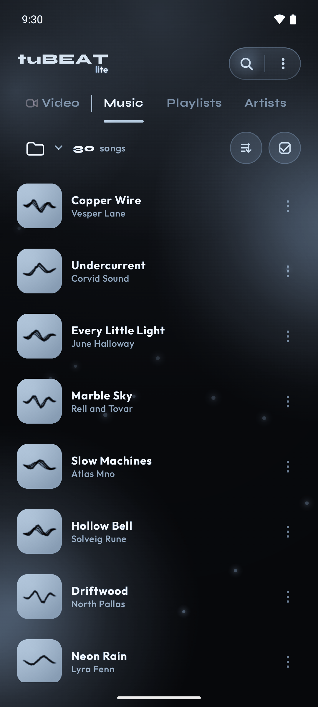
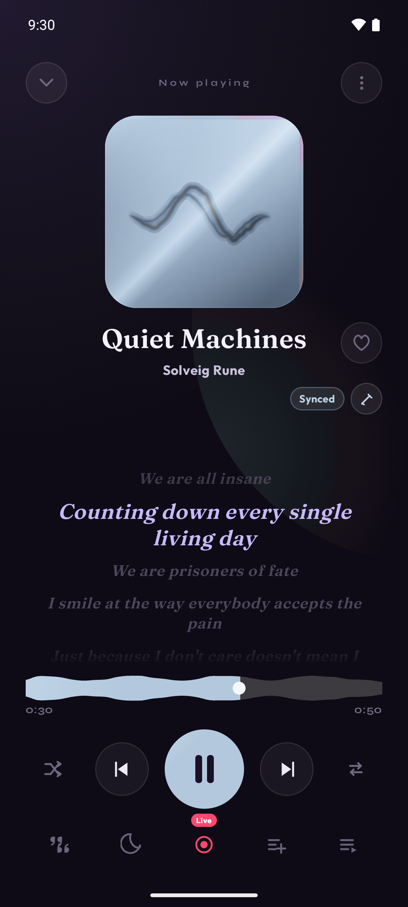
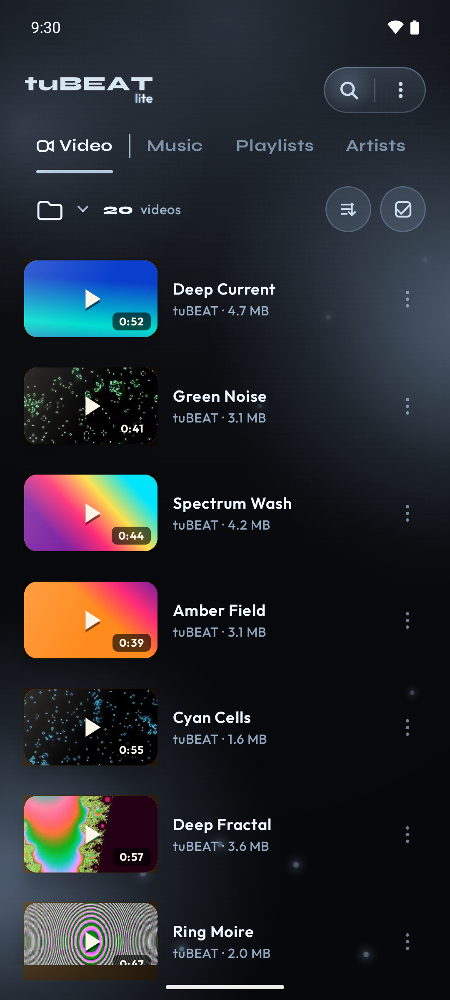
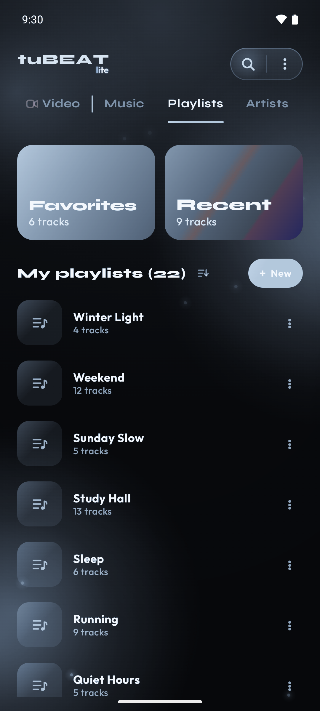

Offline player · Android
tuBEAT lite plays the songs, mp3s and videos already on your phone — with a waveform you can actually scrub, lyrics that scroll with the music, and playback that never needs a connection.
Free · No account, no subscription · Android 7.0 and up




What it does
There is nothing to subscribe to and no catalogue to browse. tuBEAT lite opens your own files and then gets out of the way.
The seek bar is drawn from the track's own sound, so you can see the quiet intro, the loud middle and the fade-out instead of dragging a thin gray line.
Crossfade of 1 to 5 seconds so one song melts into the next, or gapless playback so an album runs without dead air. Pick one; either turns the other off.
Lyrics scroll line by line with the music. If the timing drifts, nudge one line or shift every line at once, and save the fix.
Four tabs — Music, Video, Playlists, Artists — and a mini player that follows you around the app.
Keeps playing with the screen off, with controls in the notification and on the lock screen. Pauses the moment you pull your headphones out.
Browse by folder, play a whole folder in one tap, or keep one out of the library. Detailed Scan skips ringtones and notification blips.
Build, rename and reorder playlists. Export them to .m3u or .json, restore from a file, or set a daily, weekly or monthly backup.
Correct a title, artist, album or genre, or add missing artwork, saved into the file itself (MP3, FLAC, M4A). Duplicate artist spellings can be merged.
Full screen, picture-in-picture, playback speed, fit / fill / zoom, 10-second skips, and a screen lock so a stray touch can't pause the film.
Cast a song or a video to a Chromecast on your network. Driving mode is a big-control layout that offers to open itself when Bluetooth audio connects.
Listening Summary shows how long you listened, your day streak, what you played most and a genre breakdown — counted on the phone.
Sleep timer with minute and hour presets plus End of track. Search songs, artists, playlists and videos by typing or by voice.
Runs from Android 7.0. Bigger text, stronger contrast, calmer animation and a compact player are settings, not afterthoughts.
Privacy
No account, no sign-up, nothing for sale. Your music and video are read from your device and are never uploaded.
Two things do leave the phone, and it is fair that you know which: the title and artist of a track may be sent to look up lyrics as it plays, or cover art and tags when you edit it, and the app reports crashes and anonymous usage events so it can be fixed. Nothing else about your library is transmitted.
Support
Write to destek@kurtsoft.com.tr and say what you did and what happened. For a playback problem, the file format and the phone model help more than anything else.